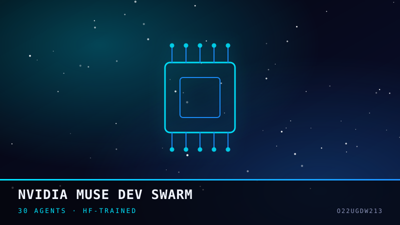

Python 0
NVIDIA Muse Dev Swarm
Built in one session with Muse: a 30-agent DevOps swarm that trains its skill knowledge from Hugging Face datasets — verified live against NVIDIA's free-tier API, where kimi-k3 answered with vision and streaming reasoning. The hard part was giving 30 specialists one shared task queue with skill lookup and zero GPU. It proves agent infrastructure can be built fast, cheap, and reproducible.